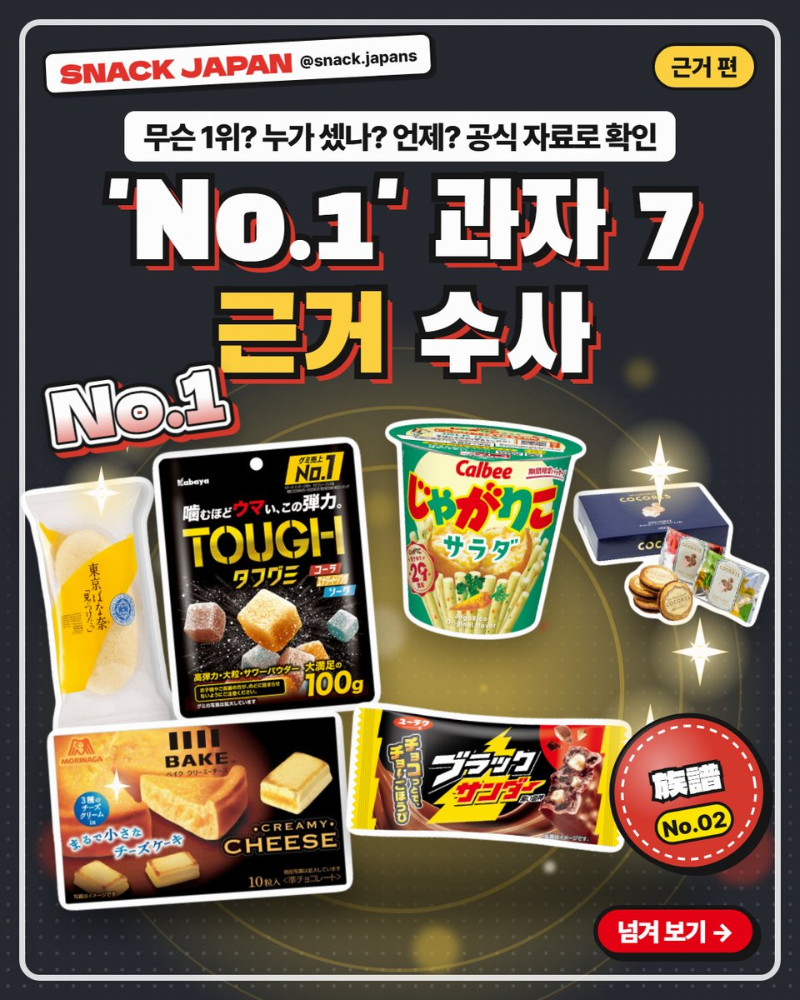
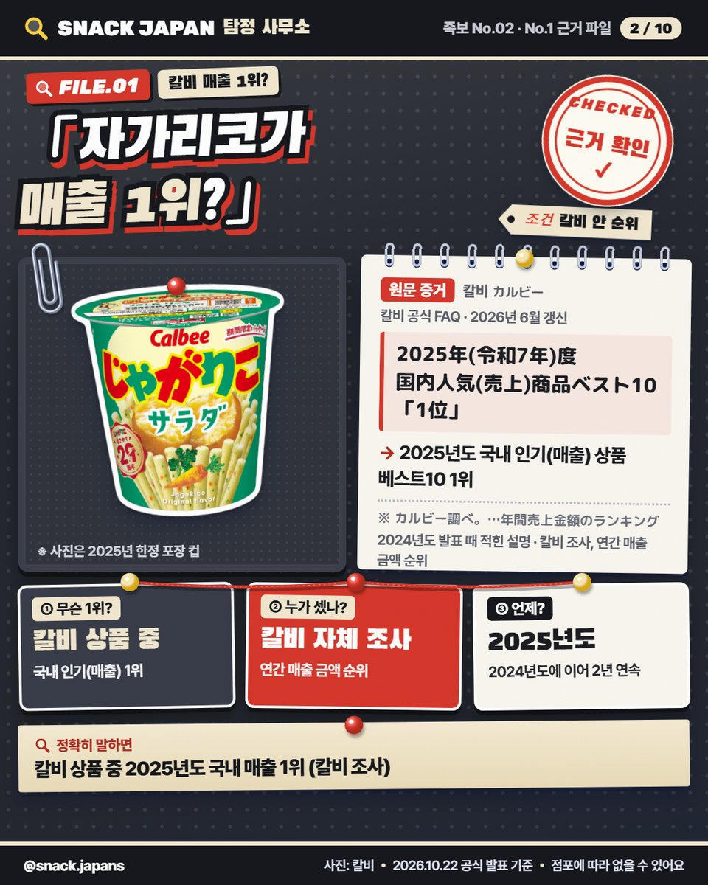
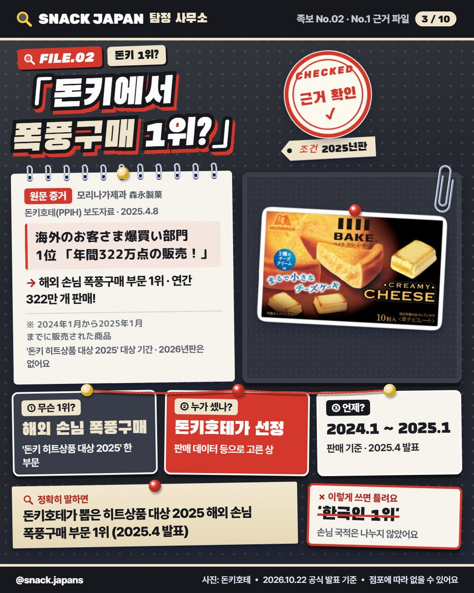
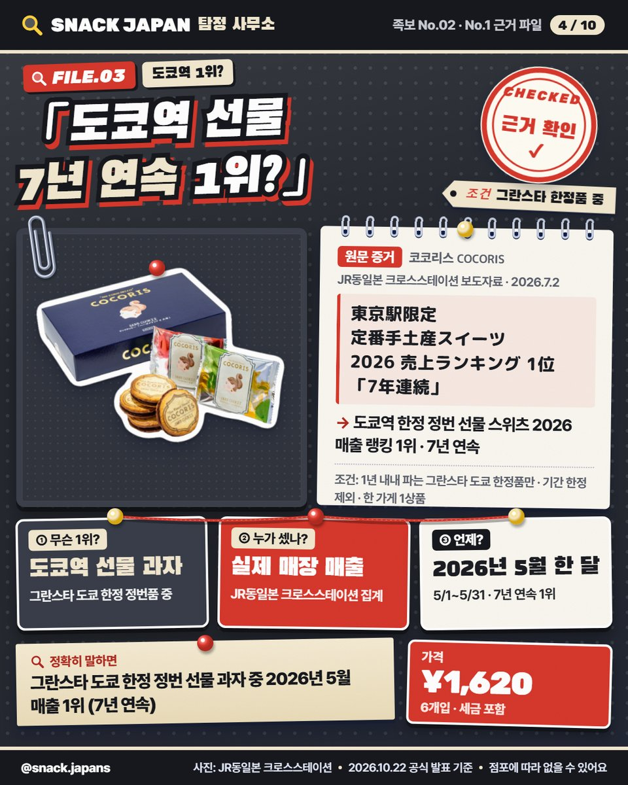
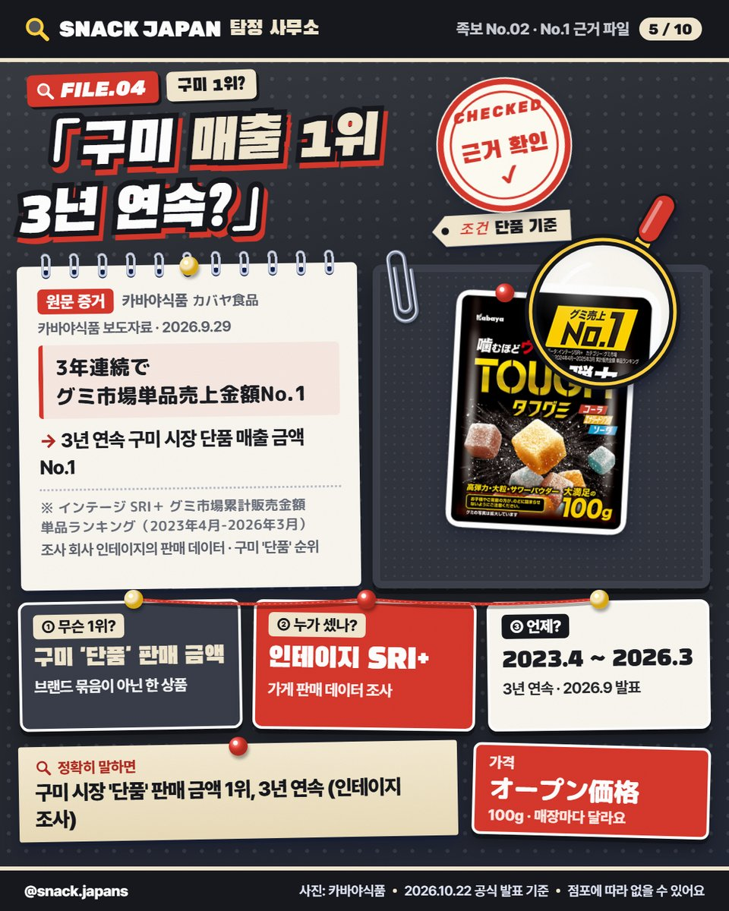
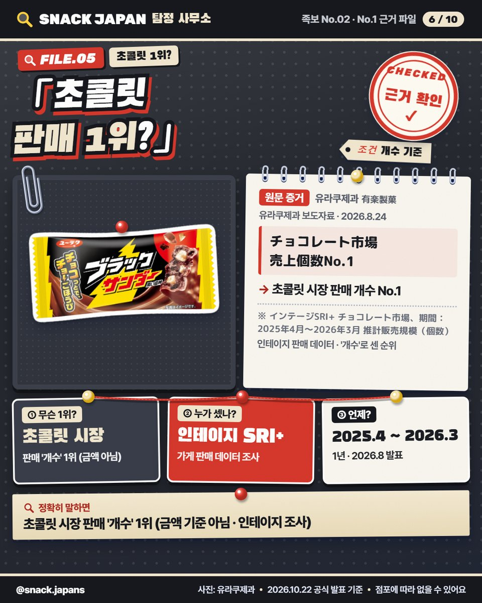
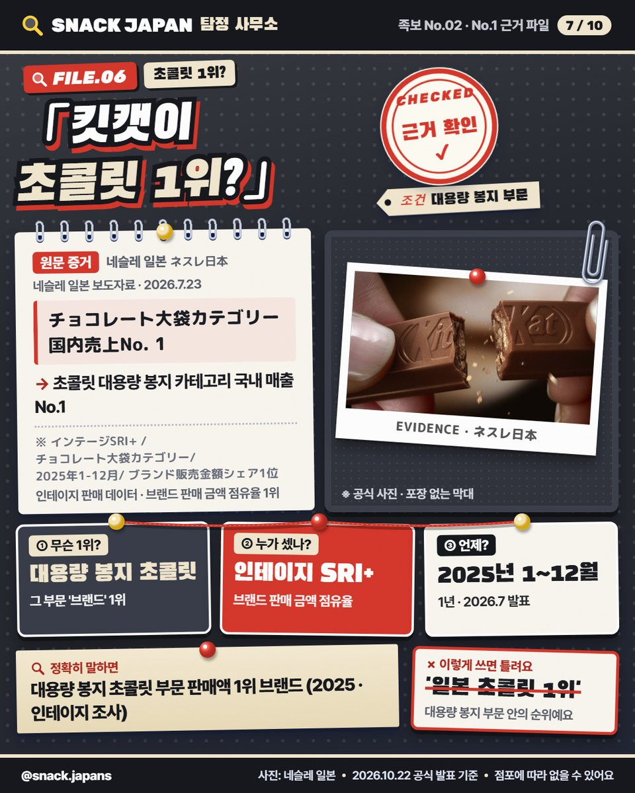
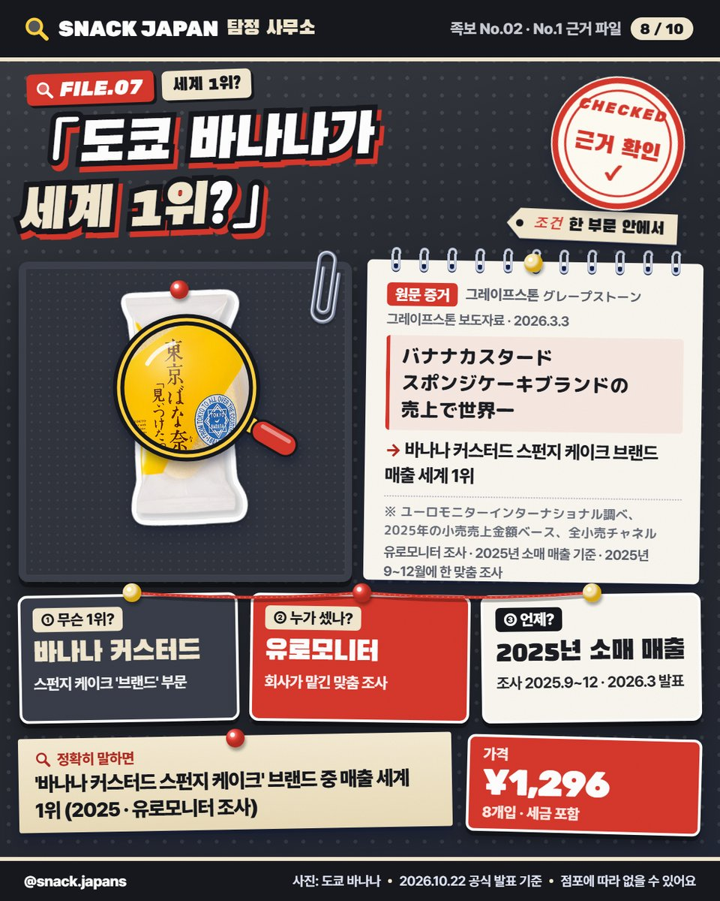
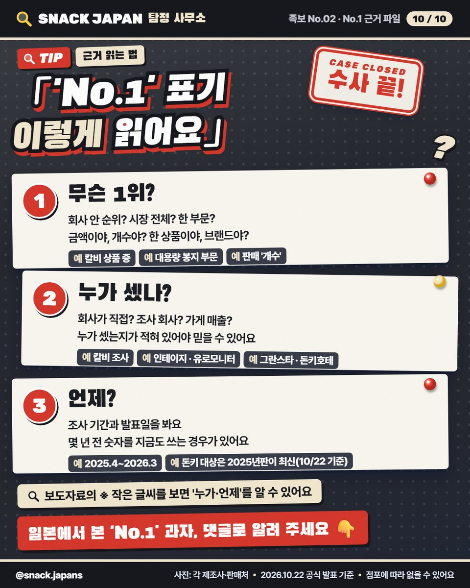

일본 과자 'No.1' 근거 정리, 자가리코·킷캣·도쿄 바나나 1위의 진짜 뜻
포장에 'No.1'이 써 있으면 다 같은 1위일까? 무슨 1위·누가 셌나·언제를 공식 자료로 7개 확인했어요 🔍
포장에 'No.1' 써 있으면… 진짜 1위일까요? 🔍
일본 과자 코너에서 'No.1', '世界一' 같은 문구 자주 보이죠.
근데 '무슨 1위'인지는 과자마다 완전히 달라요!
공식 자료로 7개를 하나씩 수사해 봤어요 🕵️

1. 자가리코 샐러드 — '칼비 상품 중' 1위

- 무슨 1위: 칼비 공식 FAQ '2025년도 국내 인기(매출) 상품 베스트10' 1위
- 누가 셌나: 칼비 자체 조사
- 언제: 2025년도 (2024년도에 이어 2년 연속)
일본 과자 전체 순위가 아니라 칼비 상품끼리의 순위예요.
카드 사진은 2025년 한정 포장 컵이라 지금 포장과 다를 수 있어요.
2. 베이크 크리미 치즈 — 돈키 '해외 손님 폭풍구매' 부문 1위

- 무슨 1위: 돈키호테 '돈키 히트상품 대상 2025' 해외 손님 폭풍구매 부문 1위 (연간 322만 개 판매)
- 누가 셌나: 돈키호테가 판매 데이터 등으로 선정
- 언제: 2024년 1월~2025년 1월 판매 기준, 2025년 4월 발표
손님 국적은 나누지 않은 상이라 '한국인 1위'는 아니에요.
2026년판 대상은 아직 없어요(10/22 기준).
3. 코코리스 샌드 쿠키 — 도쿄역 선물 과자 7년 연속 1위

- 무슨 1위: '도쿄역 한정 정번 선물 스위츠 2026 매출 랭킹' 1위, 7년 연속
- 누가 셌나: JR동일본 크로스스테이션, 그란스타 도쿄 실제 매장 매출
- 언제: 2026년 5월 1~31일
1년 내내 파는 그란스타 도쿄 한정품만, 한 가게 1상품씩 비교한 순위예요.
가격은 사진 카드에 정리해 뒀어요.
4. 터프구미 — 구미 '단품' 매출 1위, 3년 연속

- 무슨 1위: 구미 시장 단품 판매 금액 1위
- 누가 셌나: 조사 회사 인테이지 'SRI+'
- 언제: 2023년 4월~2026년 3월 (카바야 2026년 9월 발표)
브랜드 묶음이 아니라 상품 하나 기준이에요.
5. 블랙썬더 — 초콜릿 판매 '개수' 1위

- 무슨 1위: 초콜릿 시장 판매 개수 1위
- 누가 셌나: 인테이지 'SRI+'
- 언제: 2025년 4월~2026년 3월 (유라쿠제과 2026년 8월 발표)
판매 금액이 아니라 '개수'로 센 순위예요.
6. 킷캣 — '대용량 봉지 초콜릿' 1위 브랜드

- 무슨 1위: 초콜릿 대용량 봉지 카테고리 판매액 1위 브랜드
- 누가 셌나: 인테이지 'SRI+' (브랜드 판매 금액 점유율)
- 언제: 2025년 1~12월 (네슬레 일본 2026년 7월 발표)
대용량 봉지 부문 안의 순위라서 '일본 초콜릿 1위'라고 하면 틀려요.
7. 도쿄 바나나 — 한 부문에서 '세계 1위'

- 무슨 1위: '바나나 커스터드 스펀지 케이크' 브랜드 중 매출 세계 1위
- 누가 셌나: 유로모니터 (2025년 9~12월 맞춤 조사)
- 언제: 2025년 소매 매출 기준 (그레이프스톤 2026년 3월 발표)
과자 전체가 아니라 바나나 커스터드 스펀지 케이크 부문 안의 1위예요.
'No.1' 표기, 이렇게 읽어요

- 무슨 1위? 회사 안 순위인지, 시장 전체인지, 한 부문인지 / 금액인지, 개수인지
- 누가 셌나? 회사 자체 조사, 조사 회사, 가게 매출
- 언제? 조사 기간과 발표일
보도자료의 ※ 작은 글씨를 보면 '누가·언제'를 알 수 있어요.
총평
- 7개 모두 공식 자료로 근거 확인! 다만 1위의 '범위'는 제각각이에요
- 추천: 일본 가서 선물·간식 고를 때 'No.1' 문구에 자꾸 손이 가는 사람
- 기준: 2026년 10월 22일 공식 발표
저장해 두고 과자 고를 때 꺼내 보세요 📌